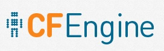
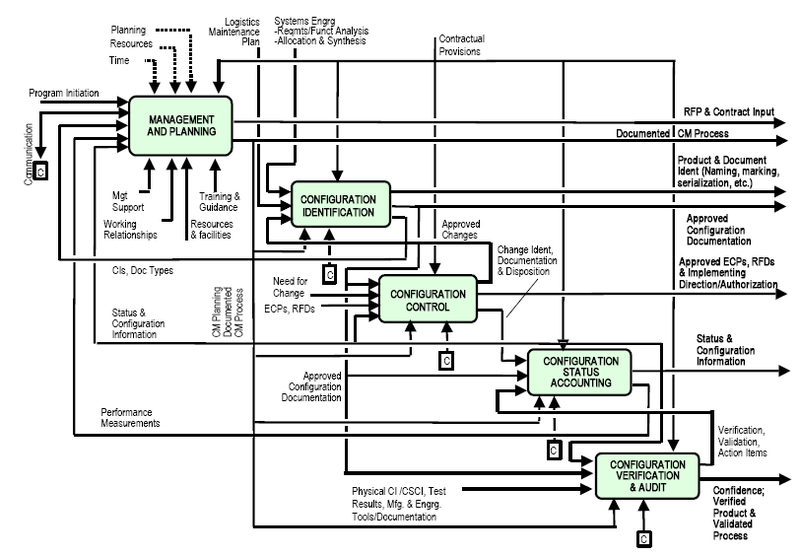
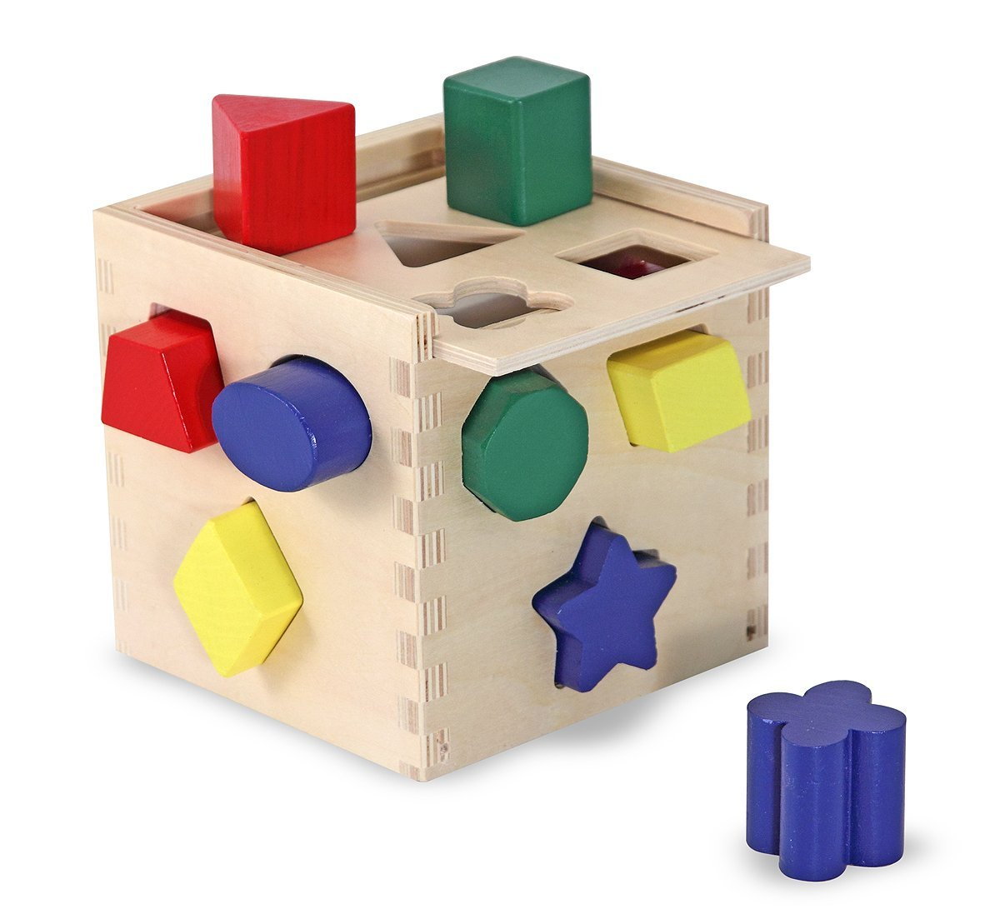
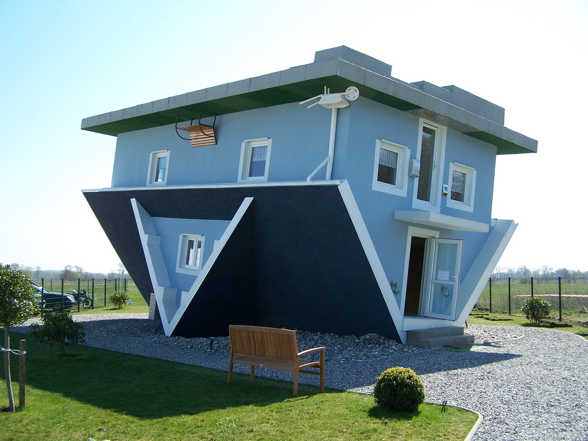

External node classifier for easy configuration management
Analysis on advantages of using an external node classifier system.
Examples on how to ease Saltstack with reclass.
(slides soon at softwareworkers.it/configuration_management)
by: Riccardo Scartozzi <risca> | From: Software Workers srl |
A horde of Configuration Management Systems



And many more...
What CMS does

- scripts and formulas
- parametrization
- classification
But it's not just about coding!
- parametrization: declaring the values of objects
- classification: targeting and identifying objects
Here come the ENCs...
Choose wisely
What fits with

software | saltstack | puppet | chef | ansible | CFEngine |
|---|
hENC | | | | | X |
reclass | X | | | X | |
hiera | X | X | | | |
varstack | X | | | | |
foreman | X | X | X | X | |
cobbler | X | X | X | X | X |
where the ENC helps
targeting | <==> | parametrization |
|---|
| | 
|
Change your point of view
What's next?
(by yourself)
Saltstack lexicon
- module
- state
- formula
- pillar
- grain
...and...
Other data type:
Actions:
- execute state
- run command
- query data and parameters
- virtualization management
- orchestration
Parametes' type
From saltstack taxonomy:
- grain: static attribute of the node (IP, RAM, CPU, OS...)
- pillar: property/variable arbitrarily assigned
Saltstack
A pluggable system for your needs.
Default configuration files
- /srv/salt/: targeting and states
- /srv/pillars/: parametrization
File taxonomy:
- top.sls
- mystate/init.sls
- mystate.sls
Managing users with Salstack
Write your own formula (and publish for the community!)
OR
Get formulas from GitHub.
First: add formula
gitfs_remotes:
- git://github.com/Sjd-Risca/users-formula.git:
- root: users
- mountpoint: salt://usersOr copy it into /srv/salt/ (the path of your master's file_roots:)
Third: assign the parameters
Help yourself with the formula's example!
Scaling
Some example to think about:
- new server, same targeting
- new server, but different targeting for pillars and/or for states
- new server, with exception
Also with saltstack is not possible to parametrize by pillar the pillars themselves.
Reclass
R ecursive e xternal node class ifier
Reclass data structure
The configuration path is split into:
- nodes: each file identifies a minion
- classes: abstract object for inheritance and interpolation
Reclass components
Every can have any of the following attributes:
- applications
- parameters
- environment
- classes
But the R?
Reclass let to recursively interpolate the classes, from one object to another.
But is possible to interpolate also the parameters, like:
parameters:
keys:
trusted_dev: AASKDJKDJJEJKD
user:
ssh_key: ${keys:trusted_dev}Managing users with Salstack and Reclass
Continuing from the previous example now the formula is already installed.
Starting with reclass there is no more need of:
- /srv/salt/top.sls
- /srv/pillars/*
With reclass only the existing formulas are kept (/srv/salt/*).
Fun with interpolation
user:
ssh_config:
github: *id001sshconfig:
github: &id001
hostname: github
options:
- HostName github.com
- User git
- IdentityFile ~/.ssh/id_rsaQuestion time
So Long, and Thanks for All the Fish